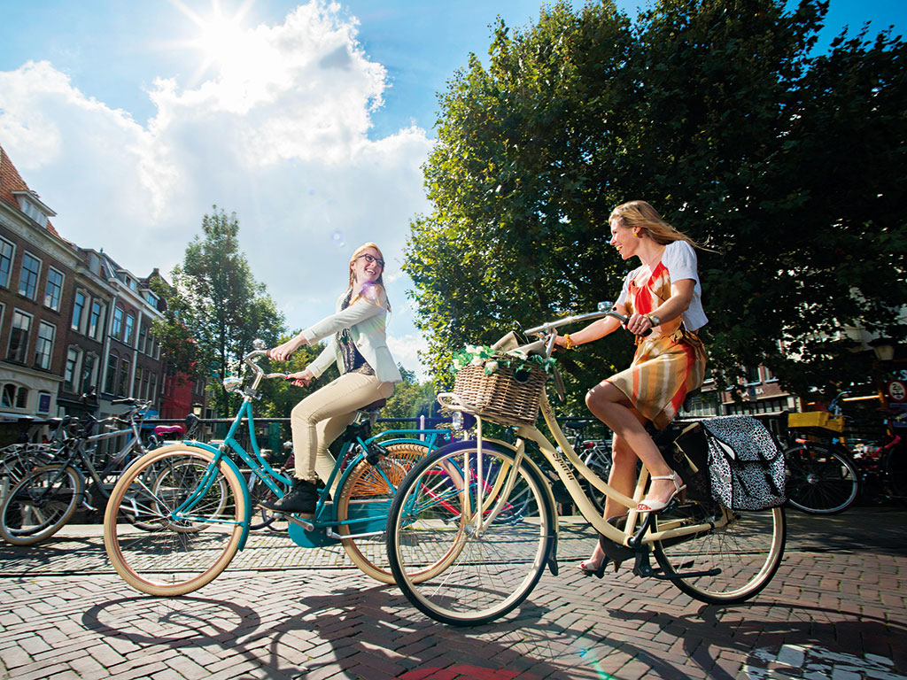

My journey in the Netherlands
The year of 2022 was a very remarkable year in my life that I would never forget. I moved to the Netherlands. This journey was projected to be very challenging, and indeed it was. On the other hand, overcoming all the challenges made me stronger, my view and life perspective changes again. I grow up! So, what you can find here?
- Why and how did I come to the Netherlands? Search Year (Zoekjaar) visa information and some notes that I wish I knew before I came here
- Settle upon arrivals (Housing, bank, groceries, healthcare, etc.)
- Culture shock, does it exist ?
- and more...
Museums in the Netherlands, life of a museum girl!

The Netherlands offers a museumkaart with fee of around 70 euros per year allowing you to visit hundreds of museums there, such a big deal!!! As a museum girl, I go for it. This is one of lots of things that I wish I know earlier after arrivals to this country.
Anyway, in this post, I'm gonna list out and review where I have been to. Also, it would be great if you can send me message on where I should go if you know of somewhere and I haven't been there yet.
- Amsterdam (Rijk Museum, Van Gogh Museum, Anne Frank Huis)
- Den Haag (Maurithuis, Rijksmuseum de Gevangenpoort)
- Delft (Museum Prinsenhof Delft, Royal Delft)
- Utrecht (Spoorweg Museum, Kasteel De Haar)
- Others (Museum Hoorn-Medemblik, Arnhem Openluchtmuseum, Mondriaanhuis Amersfoort)
- and more...
Being an exchange student in Italy. Enjoy your time!
If you have a chance to be an exchange student, enjoy it as much as you can!
This post shares my story during my time in Pisa, Italy. I know, leaning tower! To be honest, I didn't enjoy that much during my time there, which I regreted a lot. Anyway, let's see what I can offer here
- Some note before your move, packaging, housing, "permesso di soggiorno"
- Where to travel in Italy? What to do?
- How to network as an exchange student? You almost know no one, right?
- If you are a hard-working student, how to balance?